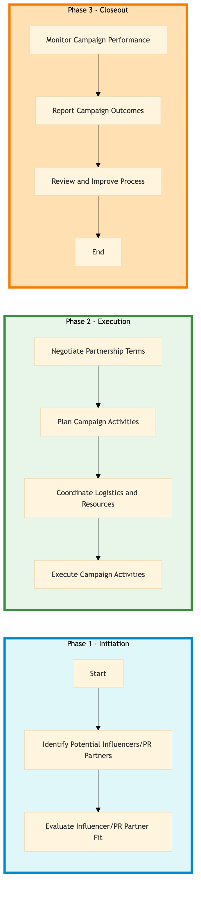

| Role | Steps |
|---|---|
| Marketing Manager | 1.1 1.2 2.1 2.2 3.1 3.2 3.3 3.4 |
| Event Planner | 2.3 3.1 |
| Housekeeping Manager | 2.3 |
| Step | Name | Role | System | Input | Output | KPI | Dec? | Exc? | Pain Point / Risk |
|---|---|---|---|---|---|---|---|---|---|
| 1.1 | Identify Potential Influencers/PR Partners | Marketing Manager | Knowcross HotSOS | Market research data, target audience demographics | List of potential influencers/PR partners | Time to identify < 2 weeks | Y | N | Finding relevant and high-impact influencers within the budget |
| 1.2 | Evaluate Influencer/PR Partner Fit | Marketing Manager | Oracle OPERA Cloud, Marriott Bonvoy CRM | List of potential influencers/PR partners | Shortlist of top influencers/PR partners | Time to evaluate < 1 week | Y | N | Ensuring the influencer's brand aligns with Marriott's values and target audience |
| 2.1 | Negotiate Partnership Terms | Marketing Manager | Oracle OPERA Cloud, Book4Time | Shortlist of top influencers/PR partners | Signed partnership agreement | Time to negotiate < 2 weeks | Y | N | Negotiating terms that satisfy both parties while maximizing campaign impact |
| 2.2 | Plan Campaign Activities | Marketing Manager, Event Planner | Oracle OPERA Cloud, IDeaS G3 RMS | Signed partnership agreement | Campaign plan with timelines and activities | Time to plan < 1 week | Y | N | Coordinating multiple stakeholders for a seamless campaign execution |
| 2.3 | Coordinate Logistics and Resources | Event Planner, Housekeeping Manager | Oracle OPERA Cloud, SynXis CRS | Campaign plan with timelines and activities | Logistics checklist for campaign execution | Time to coordinate < 2 days | Y | N | Ensuring all resources are available and properly allocated for the event |
| 3.1 | Execute Campaign Activities | Event Planner, Marketing Manager | Oracle OPERA Cloud, Book4Time | Logistics checklist for campaign execution | Campaign execution report | Execution within planned timeline | Y | N | Managing unforeseen issues during the event |
| 3.2 | Monitor Campaign Performance | Marketing Manager, Data Analyst | Oracle OPERA Cloud, Microsoft Power BI | Campaign execution report | Performance analysis and insights | Time to analyze < 1 day | Y | N | Accurately measuring the impact of the campaign on brand awareness |
| 3.3 | Report Campaign Outcomes | Marketing Manager, Data Analyst | Oracle OPERA Cloud, Salesforce | Performance analysis and insights | Campaign outcome report | Time to report < 1 day | Y | N | Communicating campaign results effectively to stakeholders |
| 3.4 | Review and Improve Process | Marketing Manager, Data Analyst | Oracle OPERA Cloud, Salesforce | Campaign outcome report | Process improvement recommendations | Time to review < 1 week | Y | N | Identifying areas for process optimization based on campaign outcomes |
A structured process document for managing influencer and PR partnerships at a full-service Marriott hotel using Oracle OPERA Cloud PMS and other Marriott systems.